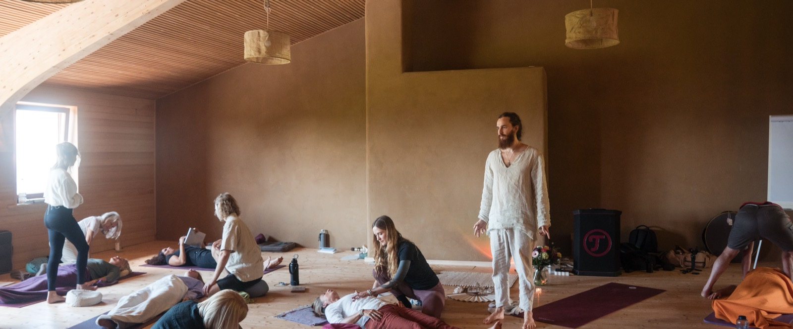
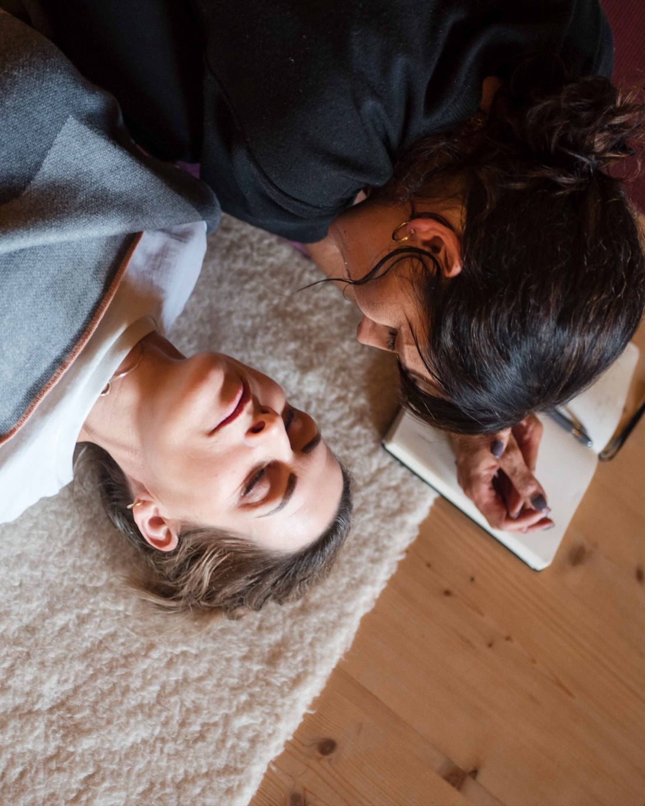
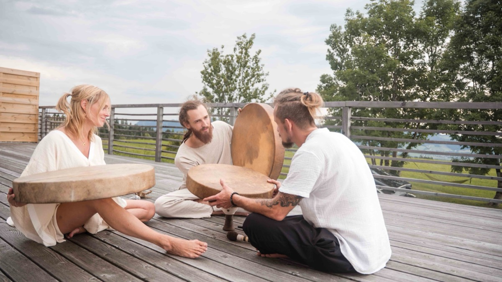
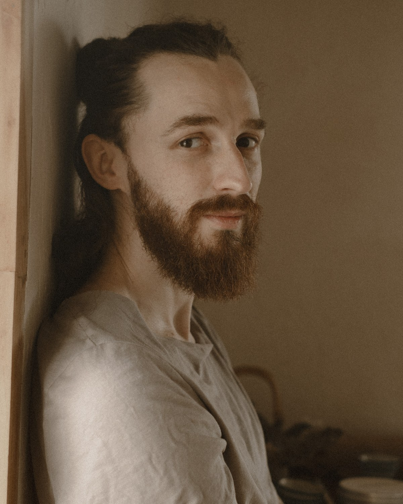
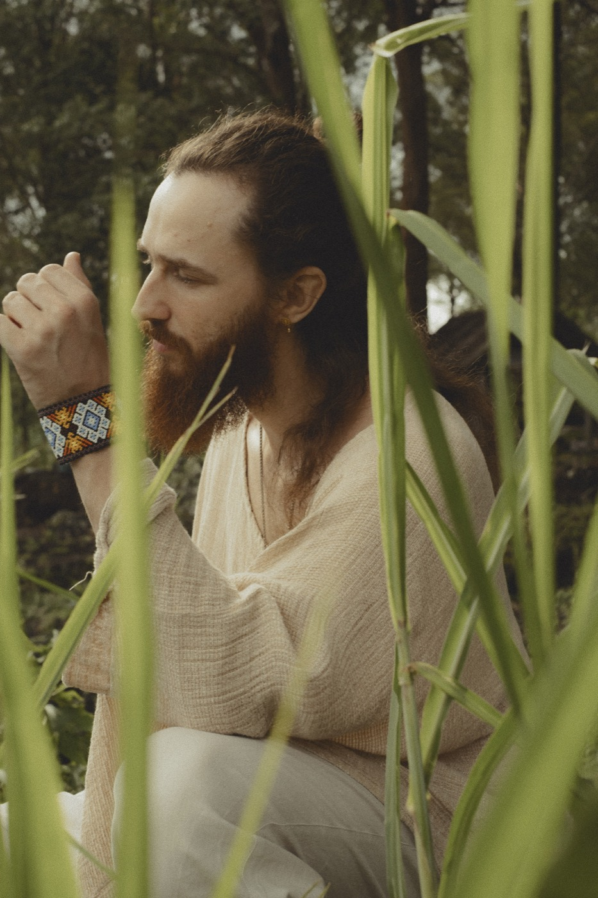
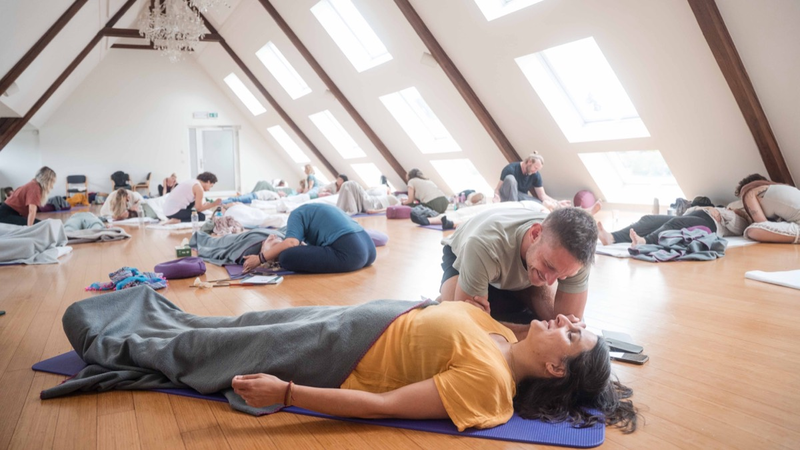

Art of Breath
Art of Breath zeigt dir, was im Atem steckt: als Werkzeug für dich selbst, und als Handwerk, mit dem du andere sicher durch eine Atemreise führst. Dahinter steht Daniel Alan, und die Trainer, die er ausgebildet hat, in ganz Deutschland und der Schweiz.

Die Gemeinschaft
Jeder Trainer bei Art of Breath hat denselben Weg hinter sich: erst die eigene Erfahrung mit dem Atem, dann die Ausbildung bei Daniel Alan. Niemand hier gibt etwas weiter, das er nicht selbst durchlebt hat.
Was mit einem einzelnen Lehrer begann, findet heute in vielen Städten statt: nah an deinem Alltag, in kleinen Gruppen, und mit derselben Tiefe wie am Anfang.
Das Handwerk
Zwei Dinge, und beide gründlich: den Atem als Werkzeug für dein eigenes Leben, und die Fähigkeit, andere sicher durch intensive Atemerfahrungen zu führen.
Das braucht mehr als ein Wochenende mit Zertifikat. Du verstehst, was dabei im Körper passiert, du erkennst, was ein Nervensystem gerade braucht, und du hältst einen Raum, in dem Menschen loslassen können. Schritt für Schritt, bis es sitzt.
Manche kommen für die eigene Praxis. Andere für ihre Arbeit als Coach, Therapeut oder in einem anderen helfenden Beruf. Beides ist hier richtig.


Der Ansatz
Es gibt Breathwork, das viel verspricht, und Breathwork, das in der Theorie stecken bleibt. Art of Breath will beides nicht. Stattdessen: ein sauberes Verständnis von Atem und Nervensystem, und eine Praxis, die wirklich in die Tiefe geht.
Die Arbeit ist trauma-informiert, die Gruppen bleiben klein. Und wo der Atem an seine Grenzen kommt, sagt dir das hier jeder offen.

Der Lehrer
Alle Trainer auf dieser Seite haben ihr Handwerk bei Daniel gelernt. Sein Buch „Atem, Die Lösung für dein Trauma“ stand auf der Spiegel-Bestsellerliste, über 300 Menschen sind seither durch seine Ausbildung gegangen.
Seine Arbeit steht an einer Stelle, an der sonst selten jemand steht: zwischen dem, was die Neurowissenschaft über das Nervensystem weiß, und dem, was ein Körper braucht, um wirklich loszulassen. Gelernt hat er bei Harvard-Professoren und tibetischen Mönchen, bei Schamanen im Amazonasgebiet und bei Pionieren der somatischen Körperarbeit.
Er lebt mit seiner Familie auf Bali und unterrichtet international. Die deutschsprachige Ausbildung läuft im Allgäu.
Der Kern der Ausbildung, in einer Gruppe an einem Ort. Atemphysiologie, Nervensystem und Trauma, und die Praxis, einen Raum zu halten, in dem Menschen loslassen können.
Danach übst du weiter, mit Handbuch, Videokurs und regelmäßigen Calls, bis die Arbeit sitzt.
Daniel begleitet jede Ausbildung persönlich. Die Verbindung endet nicht mit dem Zertifikat, aus ihr ist diese Trainerliste entstanden.
Die Wurzel
Aus einem wurden vierzehn
Was als die Arbeit eines Einzelnen begann, tragen heute dreizehn ausgebildete Trainer weiter, in Deutschland und der Schweiz. Dieselben Grundlagen, dieselbe Sorgfalt, und jeder mit eigenen Schwerpunkten.

Die Trainer
Vierzehn Trainer arbeiten unter Art of Breath, verteilt zwischen Nordsee und Alpen. Manche allein, manche im Team, und jeder mit eigenen Schwerpunkten. Auf der Karte siehst du, wer wo arbeitet und wofür er steht.
Nimm dir einen Moment und schau, wer dich anspricht.

Kontakt
Vielleicht hast du eine konkrete Frage. Vielleicht merkst du nur, dass dich das hier nicht loslässt. Schreib in beiden Fällen. Deine Nachricht landet nicht in einem System, sondern bei einem Menschen, der sie liest und antwortet.
Schreib eine Nachricht